在阅读开源项目源代码的时候，会时常一起读作者写的注释来理解代码的意图，对于英文不好的码农来说实在是比较吃力，或者当我们在写代码的时候，为了一个变量名称纠结半天时，都会需要一个强大的词典来支持我们的工作，用有道词典的话，启动过慢、电脑太卡、来回切换屏幕会感觉很不爽还好Idea提供了强大的插件扩展能力，能让我们在集成开发环境中嵌入翻译引擎，当然只要有足够的想象力，可以在Idea集成环境中开发各种插件，自定义自己的开发环境，比如下面的炫酷插件
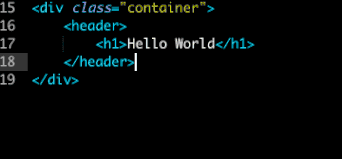
本文就向大家介绍一下如何开发一个Idea翻译插件。
首先，打开Idea集成开发环境，然后新建一个Idea plugin项目：
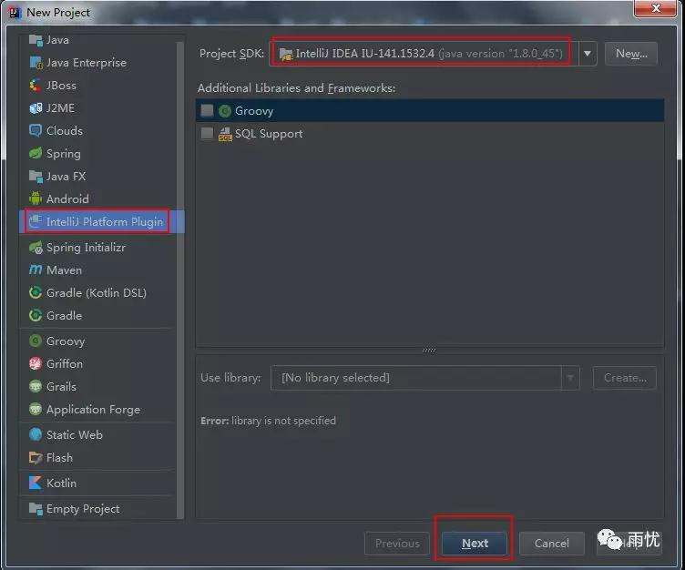
然后输入项目名称，以及项目位置，并点击Finish按钮完成创建：
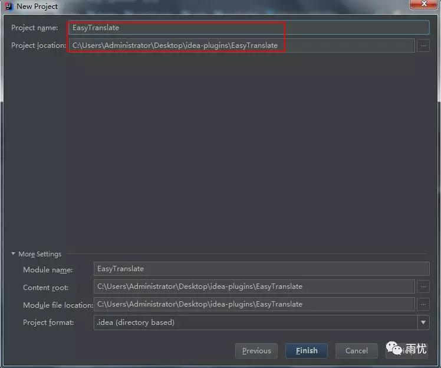
创建好项目以后，结构如下图：
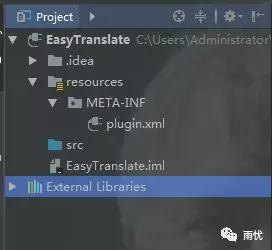
然后我们在src目录下创建一个easy.form的包，并在该包路径下创建一个名称为TranslationForm的 GUI Form：
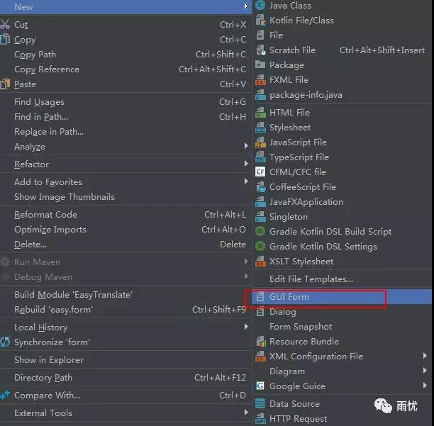
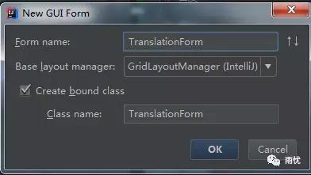
此时，Idea会自动帮我们生成一个TranslationForm.form文件和一个TranslationForm类。我们可以通过在TranslationForm.form文件中拖拽组件迅速构建一个配置面板（玩过Visual Studio的童鞋一定对这个功能很熟悉了），与此同时，Idea会自动在TranslationForm类中生成相应的组件元素：
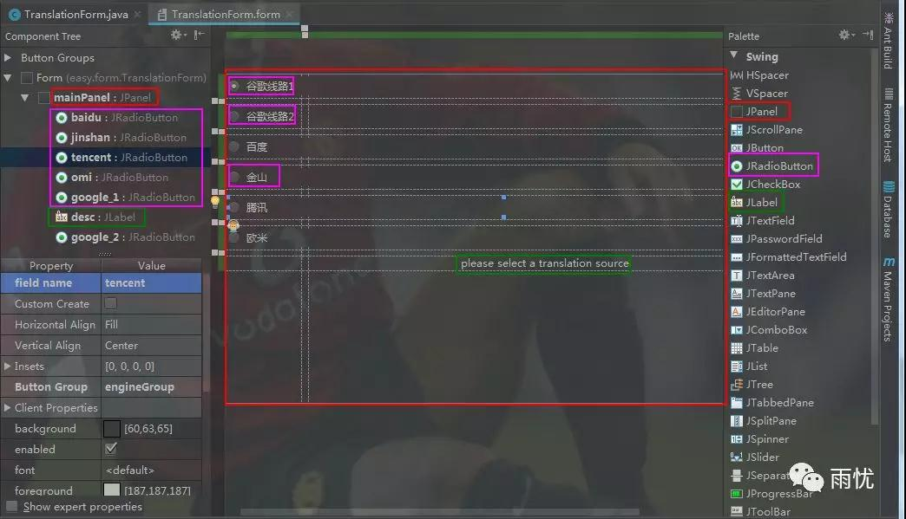
在这里，我们新创建了一个主面板JPanel，然后在该面板下创建了6个子元素JRadioButton单选按钮，以及一个标签JLabel。现在挑一个单选按钮讲解下，其他的都类似：
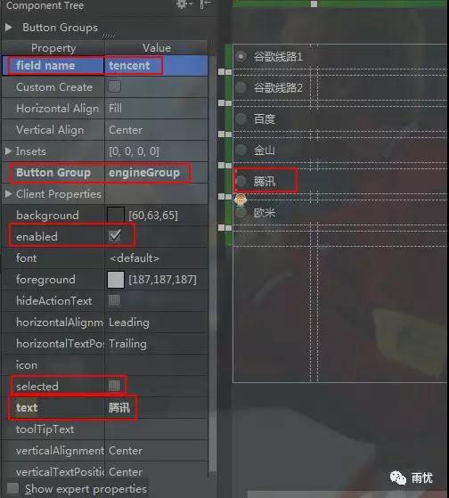
Button Group选项是定义一个按钮组，我们这里定义了一个engineGroup的按钮组，用来对按钮进行归组。field name选项就是将要在TranslationForm类中动态创建的变量名称，text就是显示的文本，selected标识是否默认选中，enabled标识是否启用，这里只简单设置了这几个选项，还有其他丰富的选项，有兴趣的童鞋可以自行研究尝试。
接下来我们看下我们的TranslationForm类：
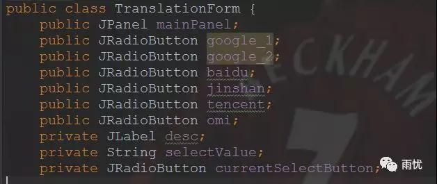
可以看到Idea为我们的各个组件元素都自动生成相对应的变量，同时，我们也自定义了一个selectValue变量（用来保存当前值）和currentSelectButton变量（用来保存当前选中的按钮），再来看下该类中的方法：
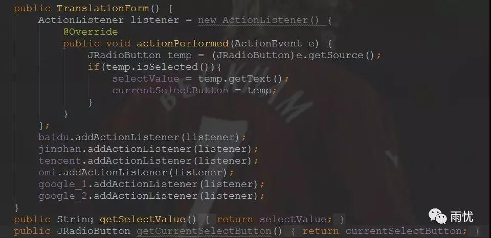
在构造函数中，我们定义了一个监听器用来监听当前用户选择的选项，并保存起来，后文会用到。
组件开发完毕,我们再来看下配置。
如何让Idea能够保存起来我们的配置，以便下次启动时能够自动加载用户相应的配置，其实，刚创建完项目后，在resources/META-INF/目录下会生成一个plugin.xml文件：
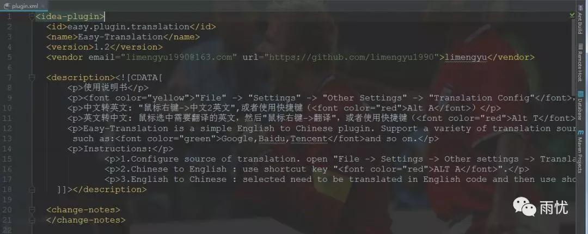
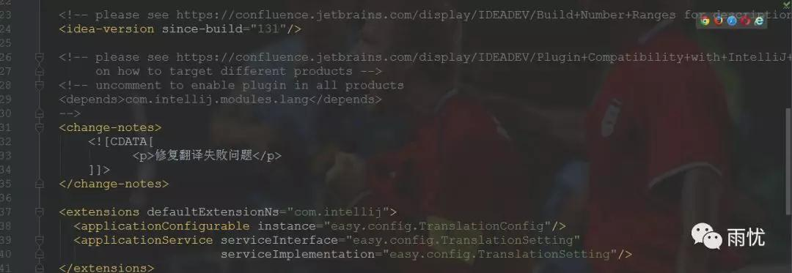
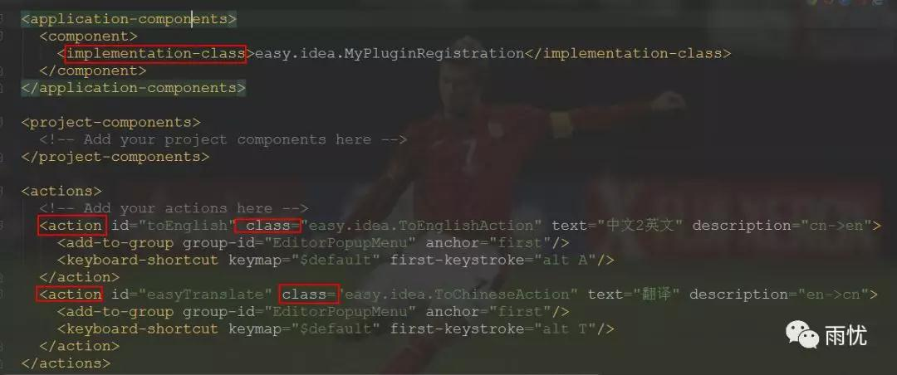
在extensions标签下，我们指定了实例easy.config.TranslationConfig类以及实现实现类easy.config.TranslationSetting，该实现类就是用来管理我们的配置信息的。在application-components标签下，我们定义了easy.idea.MyPluginRegistration实现类，Idea组件是插件整合的基础概念，有三种组件类型：application-level、project-level和module-level。 Application-level组件在IDEA启动时就被创建并初始化。在action标签下的add-to-group中的group-id很重要，它指定了你的插件在整个idea界面上的入口，这个值可以指定的很多（比如代码区域的右键菜单、编辑器顶部的菜单）。action节点中重要的是class和text，class是指定插件的入口action，一般情况下，一个插件定义一个就行了，相当于main函数吧，而text是指定插件的具体的名称，就是点击这个text然后执行class指定的类。
我们先来看下MyPluginRegistration类，在这里我们简单的注册了我们的ToChineseAction类：
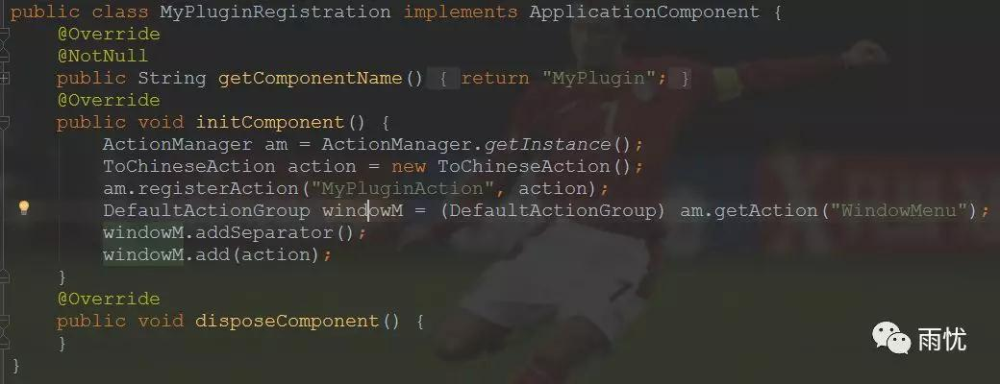
我们再来看下TranslationSetting类，该类实现了PersistentStateComponent接口，这样组件的状态将会自动保存和加载：
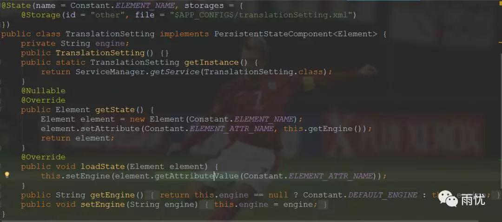
我们指定了@State和@Storage注解，这样组件的状态将会保存到一个XML文件中。在该类我们定义了一个engine的变量，用来保存当前用户选择的翻译引擎（谷歌、欧米等），同时提供了getState方法、loadState方法来设置获取配置。其中Constant.ELEMENT_NAME就是”TranslationSetting”，Constant.ELEMENT_ATTR_NAME就是”engine”，是我们自己定义的变量。
我们再来看下TranslationConfig类：
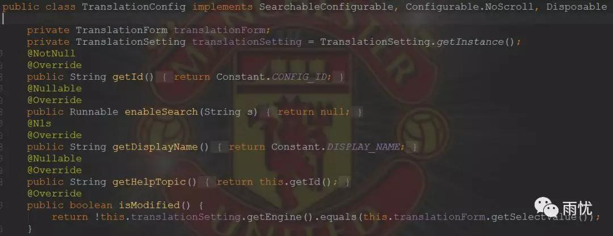
在该类中，我们定义了TranslationForm类和TranslationSetting类的变量。isModified方法是用来判断选项是否被修改过（如：我们是否更换了翻译引擎）。getDisplayName是在配置面板上显示的名称，如：
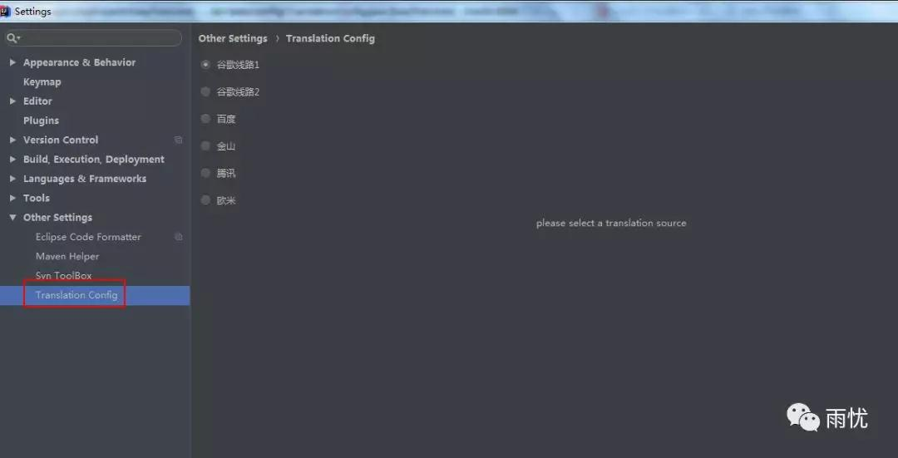
apply方法是用来将设置用户选择的翻译引擎，reset方法是重置用户选择项：
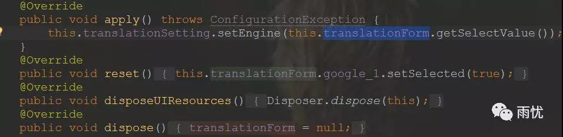
createComponent方法是用来创建组件：
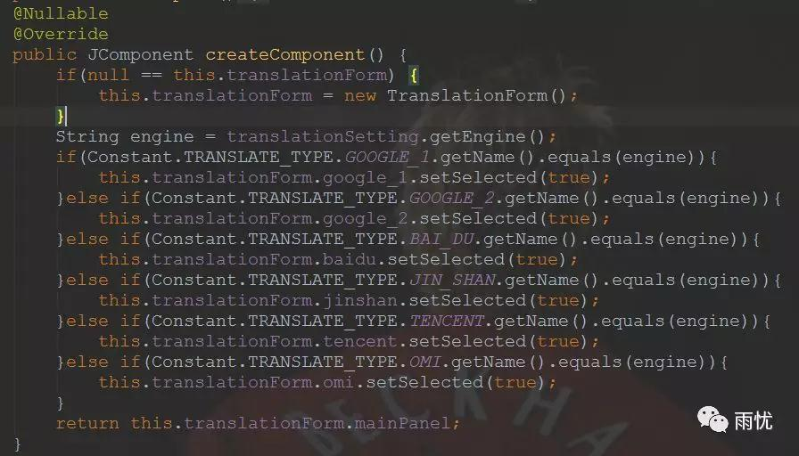
现在我们来看下ToChineseAction类：
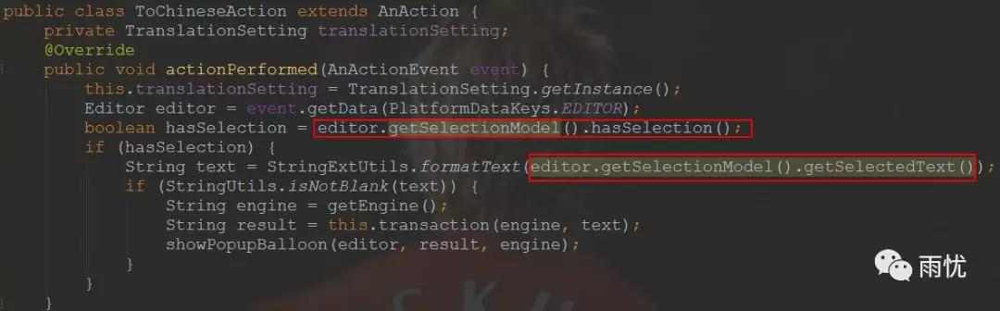
在该类中持有一个TranslationSetting类的引用，用来获取当前用户选择的翻译引擎。我们首先获取代码编辑区对象，然后判断用户是否选中了一些文本，如果选中了文本，则获取到选中的内容，然后调用formatText方法将没用的干扰文本去掉，最后获取翻译引擎，执行翻译，并将翻译结果以气泡的方式展示出来。
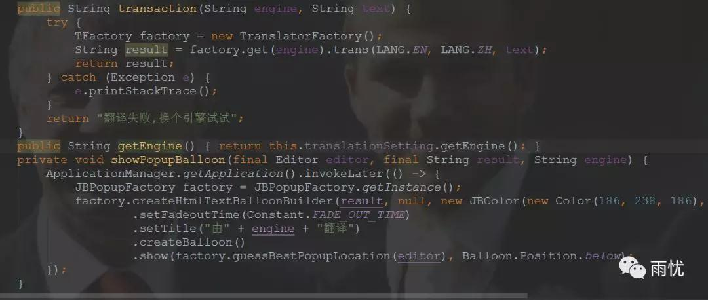
效果如下：
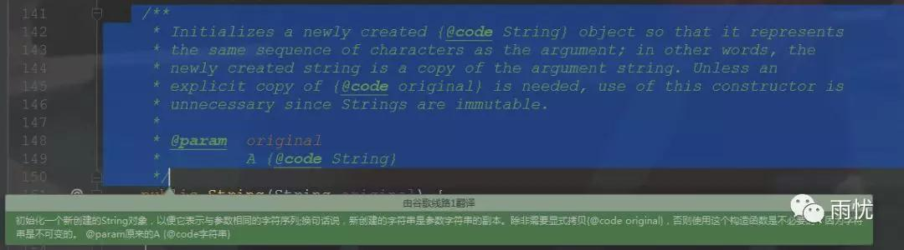
我们再来看下ToEnglishAction类，该类和ToChineseAction类似，唯一的不同就是提示面板不一样：该类是先弹出来一个框提示用户输入中文，然后将中文翻译成相应的英文：
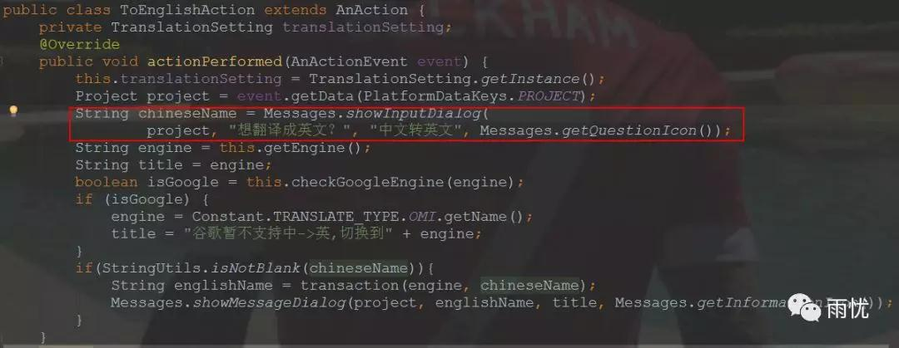
效果如下：
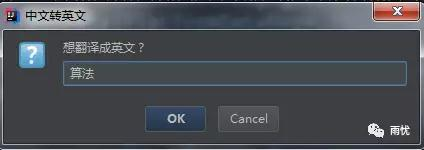
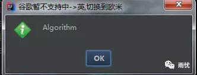
关于Idea插件开发的部分就介绍完毕了，具体怎么执行翻译的呢？有兴趣的可以去看下源码(https://github.com/limengyu1990/easy-translation)，这里就不多介绍了，同时可以去Idea官方插件库中下载该插件试用：
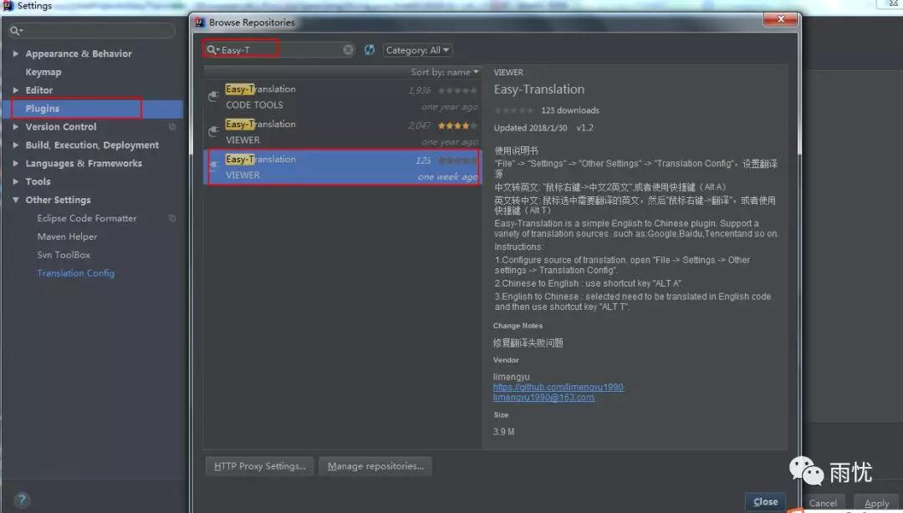